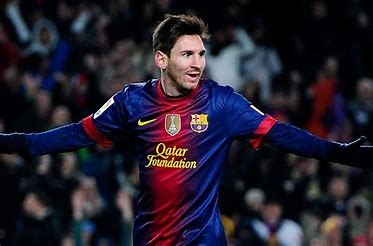
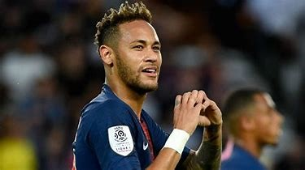

Histoire
Le football est un sport qui a fait son apparition au milieu du XIX siècle en Grande Bretagne. De fil en aiguille, ce sport est devenu aujourd’hui le plus populaire et médiatisé au monde. En plus de sa renommée, ce sport constitue dans beaucoup de pays un facteur économique important.
Les classements
Suivant les critères pris en compte, les 3 meilleurs clubs de football sont les suivants :
Barcelone
Vainqueur de 5 super coupe d’Europe, 5 Champion’s League, 4 coupes des coupes et 3 coupes de l’UEFA, Barcelone est sans conteste une équipe impitoyable. Vous pouvez admirer ci-dessous l’entrainement qui permet à cette équipe de rester en haut du classement : Vidéo
Avec un nombre de titres remportés presque équivalent à Barcelone, la Juventus de Maurizio Sarri (entraineur actuel) donne des frissons aux plus grands clubs mondiaux.
Juventus
PSG
Le trio Neymar, Mbappé et Cavani a fait beaucoup parler de nuit ces derniers temps. Ce club qui ne cesse de progresser est composé par des joueurs expérimentés et un entraineur au sommet de sa carrière.
Les meilleurs joueurs
Lionel Messi
Avec 6 ballons d’or en sa possession, ce joueur est non seulement le plus populaire mais également un des plus doué de toute sa génération.
Actuellement au PSG, ce joueur fait parler de lui. Il est aujourd’hui le joueur à qui on a dû investir la plus grosse quantité d’argent pour changer de club.
Neymar
Mbappé
Ce jeune joueur de 20 ans est sans aucun doute la relève des plus grands dans le monde du football. Il forme un des duos les plus qualitatif offensivement avec Neymar ce qui le pousse vers le haut.
Pour finir, l’équipe de France à été sacré championne du monde en 2018 après sa deuxième place à l’EURO de 2016. La jeunesse de cette équipe est témoin de son talent. Vous pouvez revivre le parcours des bleues lors de la coupe du monde en cliquant sur le lui ci-dessous :
Vidéo
Rayan MOUSSOUNI
0603525837